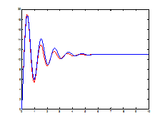
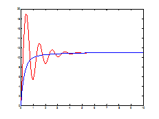

My professor's work involved the analysis of a higher order control system transfer function by first reducing the order of the control system transfer function and then studying the properties of the reduced order transfer function. His approach was to first find an approximation to the higher order transfer function by iteratively averaging the coefficients in the higher order function until the order of the function was reduced. We would then tune the approximation found using genetic algorithms.
The results were promising. The genetic algorithm was able to tune the parameters of the reduced order transfer function to approximate the original transfer function better. We tried using two different representations for the individuals in the population: a binary fixed point representation (vector of bits) that used a vector crossover and a floating point representation that used an averaging crossover. The bit-vector representation produced better approximations, though the floating point representation tended to produce damped versions of the transfer function making it interesting in its own way.
As an example, let us consider reducing the order of the following transfer function:
35s7 + 1086s6 + 13285s5 + 82402s4
+ 278376s3 + 511812s2 + 482964s + 194480
--------------------------------------------
s8 + 21s7 + 220s6 + 1558s5 + 7669s4
+ 24469s3 + 46350 s^2 + 45952 s + 17760
This is the approximation obtained
by the GA employing a bit-vector representation (original transfer function in red and
approximation in blue):
35s + 380.7
---------------------
s2 + 1.694s + 34.77
This is the approximation
obtained by the GA employing a floating point representation:
35s + 24.67
---------------------
s2 + 4.215s + 2.253
Later we realized empirically that the surface of the error function tended to be unimodal or have a single ridge. So we tried using a greedy hill climbing approach to optimize the parameters of the reduced order control system. But we realized that the solutions obtained required prior knowledge of the profile of the error surface and were dependent on the parameters used for the algorithm. As a result this approach was not as robust as using genetic algorithms.